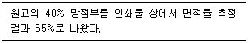
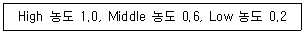
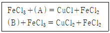
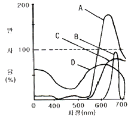

인쇄산업기사 (2011-08-21 기출문제)
1과목: 인쇄공학
1. 일반적인 양장제책의 공정에서 다음 중 가장 먼저 하는 작업은?
- 표지붙이기
- 엮음
- 정합
- 면지붙이기
(정답률: 알수없음)

2. 백상지로 포스터 인쇄를 할 때 백상지의 표면과 인쇄품질에 대한 설명으로 틀린 것은?
- 백상지를 표면 사이징하면 필기잉크가 번지는 것을 방지한다.
- 백상지의 평활도가 높아야 망점누락이 발생하지 않는다.
- 백상지를 표면 사이징 하면 잉크의 침투가 억제되어 인쇄농도가 증가한다.
- 표면사이징과 종이뜯김(picking)현상은 관계가 없다.
(정답률: 알수없음)
3. 잉크나 습수가 인쇄판을 적시는 것과 같은 젖음 현상은?
- 확산젖음
- 침적젖음
- 침투젖음
- 접착젖음
(정답률: 알수없음)
4. 웨트 트래핑(Wet trapping) 불량의 원인이 아닌 것은?
- 먼저 인쇄한 잉크보다 뒤에 인쇄하는 잉크의 택(tack)이 세다.
- 먼저 인쇄한 잉크량이 많았다.
- 먼저 인쇄한 잉크의 굳음이 느리다.
- 먼저 인쇄한 잉크가 빨리 건조되도록 한다.
(정답률: 알수없음)
5. 인쇄실의 정전기 방지대책과 거리가 먼 것은?
- 금속부품에 접지
- 절연저항을 높임
- 제전기의 사용
- 마찰이 많은 부분에 같은 종류의 재질 사용
(정답률: 알수없음)
6. 잉크의 안료입자가 너무 커서 판이나 블랭킷에 다량으로 존재하여 인쇄물에 영향을 주는 인쇄사고는?
- 파일링(piling)
- 모틀링(mottling)
- 히키(hickey)
- 더블링(boubling)
(정답률: 알수없음)
7. 농도계를 이용하면 망점의 면적율을 측정할 수 있다. 다음 조건에서 Dot gain 은 얼마인가?

- 25%
- 40%
- 60%
- 80%
(정답률: 알수없음)
8. 택(tack)에 관한 설명 중 틀린 것은?
- 잉크피막의 분열에 대한 저항값이다.
- 인쇄속도가 빨라지면 택은 증가한다.
- 유화가 증가할수록 택은 증가한다.
- 틱소트로피도 잉크 택의 변화요인 중의 하나이다.
(정답률: 알수없음)
9. 평판 오프셋 인쇄에서 사용하는 IPA의 특징이 아닌 것은?
- 축임물의 표면장력을 낮춰준다.
- 증발속도가 빠르다.
- 축임물의 냉각효과가 있다.
- 안전하고 인체에 친환경적이다.
(정답률: 알수없음)
10. 인쇄 후 시간이 지남에 따라 인쇄광택이 가장 많이 줄어드는 피인쇄체는?
- 신문용지
- 아트지
- 매트지
- 셀로판지
(정답률: 알수없음)
11. 다음 중 인쇄실의 작업환경에서 불쾌지수가 얼마일 때 가장 작업효율이 좋은가?
- 70 이하
- 70 ~ 75
- 75 ~ 80
- 80 ~ 85
(정답률: 알수없음)
12. 잉크통에서 꺼낸 잉크의 점도와 인쇄 후 잉크롤러에서 수거한 잉크의 점도는 다르다. 다음 중 그 이유로 옳은 것은?
- 틱소트로피(Thixotropy) 성질 때문이다.
- 뉴톤 유동 때문이다.
- 잉크의 미스팅 때문이다.
- 잉크의 트래핑 때문이다.
(정답률: 알수없음)
13. 인쇄면에서 빛의 표면반사에 대한 설명으로 옳지 않은 것은?
- 표면 반사광은 입사광과 거의 같은 색이다.
- 잉크 피막이 두꺼우면 안료의 수가 늘어나기 때문에 빛의 흡수량도 증가한다.
- 잉크 피막이 두꺼우면 반사광이 늘어나서 밝게 보인다.
- 잉크 피막이 거칠면 표면에서 난반사가 일어난다.
(정답률: 알수없음)
14. HLB 값이 8인 60% 의 용액과 HLB 값이 10인 40%의 용액을 혼합하였을 때 이 혼합된 용액의 HLB 값은 얼마인가?
- 2.4
- 5.2
- 8.8
- 19.2
(정답률: 알수없음)
15. 제책공정 중 매기공정과 관계없는 것은?
- 옆 매기
- 가운데 매기
- 실미싱 매기
- 걸쳐 매기
(정답률: 알수없음)
16. 프로세스 인쇄 후 중첩된 M 잉크의 농도값이 다음과 같을 때 잉크의 효율은 얼마인가?

- 60%
- 70%
- 80%
- 90%
(정답률: 알수없음)
17. 인쇄실 습도가 40% 이내일 때 주로 어떠한 장해가 발생하는가?
- 정전기 발생
- 유화 현상
- 고스트 현상
- 트래핑 불량 현상
(정답률: 알수없음)
18. 다음 그림과 같은 인쇄사고를 무엇이라 하는가?
- Hickey
- Piling
- Caking
- Thixotropy
(정답률: 알수없음)
19. 20℃ 물의 점도는?
- 1cP
- 1P
- 1Pa ·s
- 1* B
(정답률: 알수없음)
20. 수분함량이 많거나 평활도가 낮은 용지, 밀도가 낮고 흡수율이 높은 용지, 결이 있는 레자크지나 엠보싱지의 표면가공 후 자주 발생하는 문제는?
- 기포 발생
- 엣지부 박리
- 부름 발생
- 용지 수축
(정답률: 알수없음)
2과목: 인쇄재료학
21. 오프셋 인쇄기계의 잉크 롤러 중 재질이 금속인 것은?
- 잉크묻힘롤러
- 잉크 옮김 롤러
- 잉크 집 롤러
- 잉크 이김 롤러
(정답률: 알수없음)
22. 종이의 가공치수에서 A열과 B열 모두 폭과 길이의 비가 같은 비율로 설정되어 있다. 다음 중 폭과 길이의 비율이 알맞은 것은?
- 1 : √2
- 1 : √3
- 1 : 2
- 1 : √5
(정답률: 알수없음)
23. 명실용 필름의 특징에 대한 설명으로 틀린 것은?
- 작업자의 정신적인 부담을 경감시킨다.
- 밀착작업을 원활하게 할 수 있다.
- 작업의 착오와 손실을 줄일 수 있다.
- 사람이 느끼는 빛에 크게 감광한다.
(정답률: 알수없음)
24. 필름의 구조에서 처음 감광막을 뚫고 들어간 빛이 다시 감광막에 재반사 되는 것을 막아 주는 것은?
- 보호막
- 필터층
- 발색제
- 헐레이션 방지층
(정답률: 알수없음)
25. 감광잉크의 제조시 사용되는 감강제가 아닌 것은?
- 양이온 계면활성제
- 음이온 계면활성제
- 폴리올 (다가 알콜)
- 아민류
(정답률: 알수없음)
26. 오프셋 잉크의 일반적인 특징이 아닌 것은?
- 택
- 감색성
- 틱소트로피
- 유동성
(정답률: 알수없음)
27. 용지의 물리적 시험법 중 종이를 시험판에 물려 양쪽 끝에 힘을 가해 끊어지는 값을 측정하는 것은?
- 인열강도
- 인장강도
- 표면강도
- 사이즈도
(정답률: 알수없음)
28. 기계펄프를 사용하여 리드닌 함량이 높은 종이는?
- 신문용지
- 백상지
- 아트지
- 매트지
(정답률: 알수없음)
29. 오목판 인쇄용 판재료의 표면특성으로 가장 중요하게 요구되는 성질에 해당하는 것은?
- 광택성
- 탄성
- 내열성
- 내마모성
(정답률: 알수없음)
30. 그라비어 감광 재료에서 카본티슈의 감광재로 사용되는 것은?
- 중크롬산암모늄
- 중크롬산나트륨
- 중크롬산칼륨
- 중크롬산칼슘
(정답률: 알수없음)
31. 고무 블랭킷이 갖추어야 할 성질로 적합하지 않은 것은?
- 친유성일 것
- 내용제성일 것
- 탄성 및 경도가 클 것
- 두께가 일정할 것
(정답률: 알수없음)
32. 스크린인쇄에서 용제의 선택조건으로 가장 거리가 먼 것은?
- 잉크의 점도
- 건조성에 미치는 영향
- 스퀴지의 팽윤성, 용해성
- 스크린 틀의 면적
(정답률: 알수없음)
33. 다음 재료 중 도금면의 경도가 가장 높은 것은?
- 구리
- 니켈
- 크롬
- 철
(정답률: 알수없음)
34. 그라비어(gravure) 잉크에 대한 설명으로 옳지 않은 것은?
- 유동성이 크다.
- 점착성이 낮다.
- 택이 매우 낮다.
- 용제는 비휘발성 이다.
(정답률: 알수없음)
35. 중크롬산 감광액에 대한 설명 중 틀린 것은?
- 양방은은 온,습도가 높을수록 빠르다.
- 감광막의 pH가 높을수록 감도는 높다.
- 감광도는 할로겐화은(AgX) 감광유제에 비하여 매우 낮다.
- 콜로이드에 대한 중크롬산염의 혼합비율이 높으면 감도는 증가한다.
(정답률: 알수없음)
36. 종이의 평량을 나타내는 단위는?
- g/cm2
- g/m2
- kg/cm2
- kg/m2
(정답률: 알수없음)
37. 인쇄 종이의 색을 맞추는 방법이 아닌 것은?
- 육안으로 측정하는 방법
- 색 조견표와 시편을 맞추는 방법
- 분광 광도계를 이용하는 방법
- 불투명도를 이용하는 방법
(정답률: 알수없음)
38. 다음은 염화제2철의 부식 반응식이다. ( )안에 각각 알맞은 것은?

- A : Cu2 , B : CuCl
- A : Cu , B : CuCl
- A : Cl2 , B : CuCl
- A : Cl2 , B : CuCl2
(정답률: 알수없음)
39. 다음 축임물 성분 중 주로 판면의 불감지화 작용을 하는 것은?
- 질산나트륨
- 아라비아고무액
- 중크롬산나트륨
- 아황산나트륨
(정답률: 알수없음)
40. 양극산화 PS판의 특징에 대한 설명으로 틀린 것은?
- 표면의 경도가 커서 사옥의 마모가 적고 내쇄력이 크다.
- 산화 피막은 미세한 셀(cell) 형태의 다공질을 가지고 있어 보수성이 좋다.
- 표면이 다공질 이므로 감광액의 접착이 대단히 작아서 화상의 질이 좋다.
- 다른 PS판에 비하여 망점재현성이 우수하다.
(정답률: 알수없음)
3과목: 인쇄색채학
41. 색 거울 (half mirror) 이 사용되는 기기는?
- 제판카메라
- 원색인쇄기
- 컬러 스캐너
- 밀착기
(정답률: 알수없음)
42. 보통 밝기에서 추상체만이 작용하는 경우의 순응은?
- 명순응
- 암순응
- 휘도순응
- 무채순응
(정답률: 알수없음)
43. Ostwald 표색계는 일반적인 관찰조건에서 기본이 되는 3색이 적절한 비의 양으로 혼합되어 보이는 것이라는 가설에서 표색체계를 구성하였는데 이 때의 기본 3색량에 해당되는 것은?
- 순색량, 검정색량, 흰색량
- 순색량, 노랑색량, 검정색량
- 흰색량, 검정색량, 빨간색량
- 검정색량, 파랑색량, 흰색량
(정답률: 알수없음)
44. 물체색의 CIE XYZ 삼자극치를 구한 결과 20(X), 50(Y), 10(Z) 일 때, 색도좌표 x, y, z 값을 계산하면?
- x=0.25, y=0.625, z=0.125
- x=0.02, y=0.⑤, z=0.01
- x=0.04, y=0.016, z=0.08
- x=0.08, y=0.⑤, z=0.09
(정답률: 알수없음)
45. 많은 색점들이 조밀하게 병치되어 있어 서로 혼합되어 보이는 병치혼색의 특징이 아닌 것은?
- 평균혼합이므로 명도와 채도가 평균값으로 지각된다.
- 망막의 동일부를 다른 색광이 동시에 자극하여 혼합되는 현상이다.
- 베졸드 효과는 병치혼색의 원리를 이용한 효과이다.
- 색점들의 혼합이므로 감법혼색에 속한다.
(정답률: 알수없음)
46. 다음은 여러 가지 색료의 분광반사율을 개략적으로 나타낸 것이다. 형광적 특성을 가진 색에 가장 가까운 것은?

- A
- B
- C
- D
(정답률: 알수없음)
47. 인쇄용 잉크에 의한 발색 조합 중 시료의 표면이 cyan 잉크일 때 red + green + blue 3색 광원을 가진 상태로 시료면을 조명했다고 하면 사람의 육안으로 흡수되는 광원은?
- red, blue
- green, blue
- cyan
- green
(정답률: 알수없음)
48. 디지털 방식에 의해 R, G, B 각 색의 채널을 256 계조로 컬러 재현을 할 때 표시 가능한 색 수는?
- 256 + 256 + 256
- (256 × 256) + 256
- 256 × 256 × 256
- (256 + 256) - 256
(정답률: 알수없음)
49. 색에 대한 용어 중 눈에 들어와서 시감각을 일으키는 방사로서 분광조성에 의하여 결정하는 것은?
- 개구색(開口色)
- 비시감도(比視感度)
- 휘도(輝度)
- 색자극(色刺戟)
(정답률: 알수없음)
50. 시료와 표준색표를 나란히 놓고 측정할 때 배경의 영향으로 잘못 측정하기 쉽다. 이러한 현상을 줄이기 위하여 사용하는 배경색은?
- 녹색
- 회색
- 노랑색
- 파란색
(정답률: 알수없음)
51. 한국산업규격과 교육계 등에서 사용되고 있는 먼셀의 색상환에 대한 설명으로 옳은 것은?
- 다홍 · 초록 · 남색을 기준으로 하는 색채 원추체와 색상환 체계를 갖고 있다.
- 불 · 공기 · 물 · 흙의 고유색인 빨강 · 초록 · 파랑 · 노랑 4색을 기본으로 하고 있다.
- 빨강 · 노랑 · 초록 · 파랑 · 보라를 기준으로 그 색들의 물리보색인 5색을 더하여 배열 시켰다.
- 최초의 색입체를 고안하여 모든 색상 · 밝은 색조(Tone) · 어두운 색조 등이 포함될 수 있도록 구성하였다.
(정답률: 알수없음)
52. 한 여름에 더운 느낌을 피하기 위해 실내 색상을 바꾸고자 한다. 이 경우 어떠한 색조계열이 적절한지 그리고 이러한 색채효과는 어떠한 대비현상을 이용한 것인지 바르게 짝지어진 것은?
- 난색-동시대비
- 중성색-색상대비
- 순색-채도대비
- 한색-한난대비
(정답률: 알수없음)
53. 색광혼합의 삼원색이 아닌 것은?
- 빨강 (R)
- 초록 (G)
- 노랑 (Y)
- 파랑 (B)
(정답률: 알수없음)
54. 분광반사율이나 투과율이 달라도 일정한 조명광원에서 같은색으로 보이게 되는 현상은?
- 색지각
- 메타메리즘
- 분광감도
- 컬러균형
(정답률: 알수없음)
55. Neo Impressionist 인 쇠라, 스냑 같은 Pointillism 화가들이 추구했던 방법으로, 소면적 색각이상을 이용한 것은?
- 대비 현상
- 면적 효과
- 병치 현상
- 색의 심리적 효과
(정답률: 알수없음)
56. 광원의 3원색에 대한 색재현 관계식을 잘못 나타낸 것은? (단, R은 Red, G는 Green, B는 Blue, W는 White, C는 Cyan, P는 Purple 을 나타낸다.)
- R + C = W – P
- R + G = W - B
- G + B = W – R
- R + B = W - G
(정답률: 알수없음)
57. Munsell 표색기호 PB의 우리말 색상은?
- 자주
- 연두
- 청록
- 남색
(정답률: 알수없음)
58. 5R 4/14와 같이 표기하는 색체계는?
- Munsell
- NCS
- BS
- Pantone
(정답률: 알수없음)
59. 분광광도계에 대한 설명으로 틀린 것은?
- 색측정을 정밀하게 할 수 있는 장치이다.
- 샘플의 분광반사율을 측정한다.
- 조명각도은 항상 같은 조건에서 측정할 수 있다.
- D65와 C광원 조건하에서만 측색값을 얻을 수 있다.
(정답률: 알수없음)
60. 물체가 빛에 의해 조사되고 어떤 파장이 흡수, 반사, 투과하여 특정의 색으로 보일 때의 색을 무엇이라 하는가?
- 색온도
- 스펙트럼
- 순도
- 물체색
(정답률: 알수없음)
4과목: 사진제판공학
61. 하나의 화소에 주신호와 호링신호를 만들어 최종단계에서 두 개의 신호를 겹침에 따라 sharpness 를 증가시키는 방법은?
- USM
- DM
- 피킹
- 크리스핑
(정답률: 알수없음)
62. 광원에서 1m 떨어진 곳에 조도가 1Lux 라면 4m 떨어진 곳의 조도는?
- 1/4 Lux
- 1/8 Lux
- 1/16 Lux
- 1/32 Lux
(정답률: 알수없음)
63. 스크린 제판방식 중 직접감광법으로 제판한 판의 경막처리제가 아닌 것은?
- 옻칠
- 캐슈
- 아리비아고무
- 우레탄도료
(정답률: 알수없음)
64. 교정 작업 중 트러블의 원인이 아닌 것은?
- 도트게인, 트래핑, 농도의 이상
- 분해와 교정의 언 밸런스
- 초교와 재교의 차이
- 원고와 교정의 밸런스
(정답률: 알수없음)
65. 평오목판 제판시에 판의 탈막이 잘 되지 않는 원인과 관계가 없는 것은?
- 빛쬠 시간이 부족할 때
- 감광막이 너무 엷을 때
- 감광액을 고온에서 건조 시겼을 때
- 보호 잉크와 래커막이 너무 두꺼울 때
(정답률: 알수없음)
66. 할로겐화은 감광유제에 빛을 쬐어 만들어진 잠상은 적광 및 적외광 등의 장파장의 빛에 의해 생성된 잠상이 파괴되는 것과 관련 있는 것은?
- 사바티에 효과
- 솔라리제이션
- 허셀 효과
- 잠상 퇴행 현상
(정답률: 알수없음)
67. 감광재료엣 헐레이션 방지막의 색은 어느 공정에서 대부분 제거되는가?
- 현상
- 정착
- 수세
- 정지
(정답률: 알수없음)
68. 반사 농도계로 Yellow 잉크의 농도를 측정하려고 한다. 어떤 필터를 선택하여야 하는가?
- Blue 필터
- Green 필터
- Red 필터
- Black 필터
(정답률: 알수없음)
69. 빛은 파장에 따라 색이 다르고 굴절률이 다른 성질이 있다. 다음 중 굴절률이 가장 작은 색광은?
- 주황색광
- 녹색광
- 노란색광
- 적색광
(정답률: 알수없음)
70. 다음 중 전자통신 출판은?
- 인터넷
- CD-ROM
- DVD
- 도서
(정답률: 알수없음)
71. 색분해 공정에서 Y,M,C 각색에서 Bk성분을 제거하고 그 제거된 Bk양 만큼 직접 Bk로 바꿔놓기 위한 목적으로 색잉크를 줄이는 것은?
- UCR
- UCA
- USM
- Cut red
(정답률: 알수없음)
72. 전자 출판의 구성원으로 제작부의 주된 역할은?
- 출판물의 성격과 내용, 스타일을 참조하는 곳
- 출판물의 인쇄를 담당하는 곳
- 출판물의 영업과 효율적인 관리 및 유통을 담당하는 곳
- 출판물의 구입을 유도하고 그 수요를 창출하는 곳
(정답률: 알수없음)
73. 컬러 스캐너로 색분해를 함에있어 원고가 풍경인 경우, 샤프니스를 강조하려면 어페추어(aperture), 게인(gain), 스타팅포인트는 각각 어떻게 설정하여야 하는가?
- 어페추어는 작게, 게인은 약하게, 스타팅포인트는 표준적으로
- 어페추어는 크게, 게인은 약하게, 스타팅포인트는 강하게
- 어페추어는 작게, 게인은 약하게, 스타팅포인트는 강하게
- 어페추어는 작게, 게인은 강하게, 스타팅포인트는 표준적으로
(정답률: 알수없음)
74. 광하학 반응에 있어서 반응량은 조사광량에 비례하게 되는데 이를 무엇이라 하는가?
- 상반법칙
- 단속노출효과
- 상반칙불궤
- 고조도불궤
(정답률: 알수없음)
75. 교정인쇄나 본인쇄에서 망점재현 상태를 점검하기 위하여 사용하는 관리용 스트립 중에서 세로방향의 가는 평행선을 바탕으로 하여, 가로방향의 가는 평행선으로 무늬를 넣은 것을 무엇이라고 하는가?
- 슬러 게이지
- 스타 타깃
- 시그널 스트림
- 도트게인 스케일
(정답률: 알수없음)
76. 컴퓨터에서 작성된 데이터를 출력장치로 보내어 기록하기 위해 변환시키는 번역기는?
- CTP
- CTF
- RIP
- DTP
(정답률: 알수없음)
77. 스크린 제판시 감광액을 도포한 후 빛쬠, 현상을 할 때 비화선부의 일부분이 떨어져 나가는 현상이 생긴다. 이 때의 원인과 관계가 먼 것은?
- 노출이 부족할 경우
- 노출이 과다할 경우
- 불량한 감광액을 사용했을 경우
- 감광액이 두껍게 도표되었을 경우
(정답률: 알수없음)
78. 다음 제팜 방식 중 오목판식에 해당하는 것은?
- 컨벤셔널 그라비어 제판법
- 감광성 수지판
- 연판
- PS판
(정답률: 알수없음)
79. 조명에서 나오는 빛의 양이 3000 lm 이고, 총 면적이 25m2인 인쇄실 바닥의 조도는 얼마인가?
- 60 lx
- 100 lx
- 120 lx
- 180 lx
(정답률: 알수없음)
80. 편집 데이터의 흐름을 옳게 나타낸 것은?
- 편집용 컴퓨터 → 립서버 → 현상기 → 출력기
- 편집용 컴퓨터 → 립서버 → 출력기 → 현상기
- 립서버 → 출력기 → 현상기 → 편집용 컴퓨터
- 출력기 → 현상기 → 편집용 컴퓨터 → 립서버
(정답률: 알수없음)